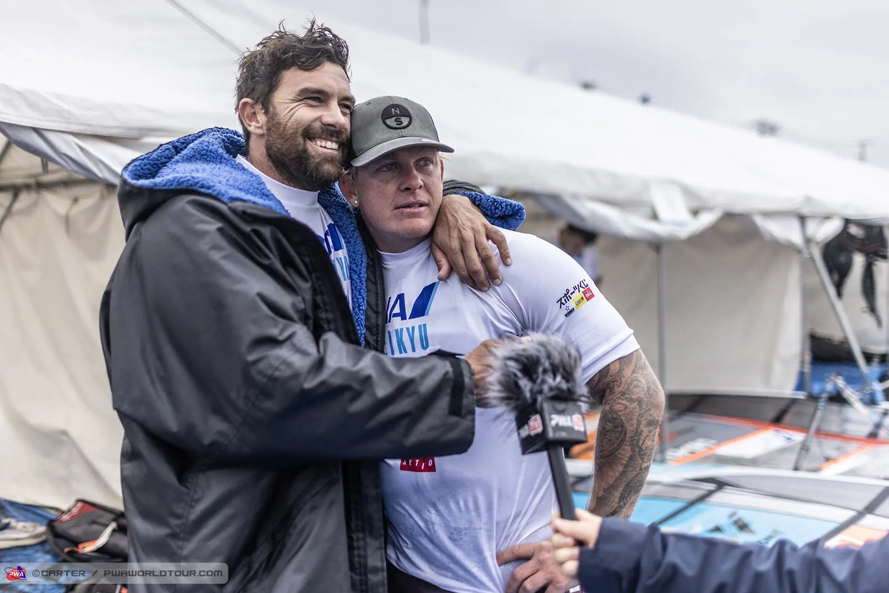
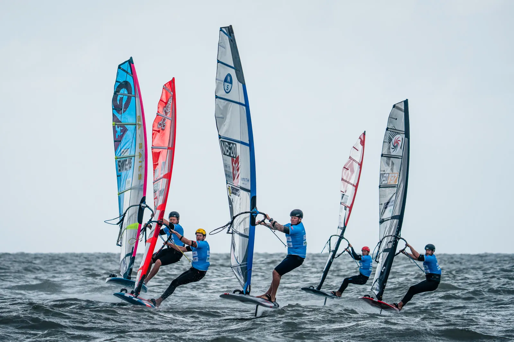
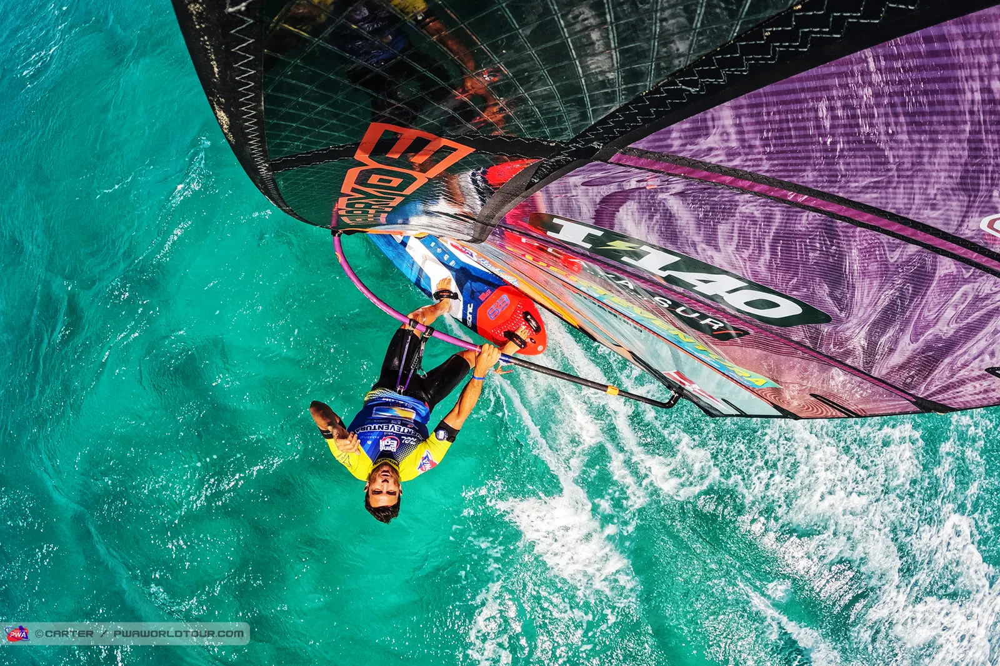
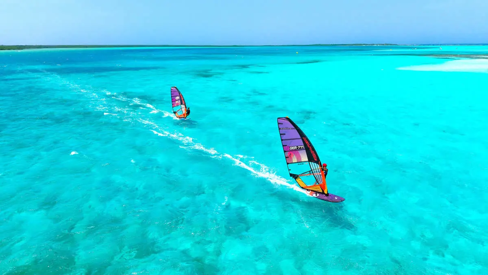
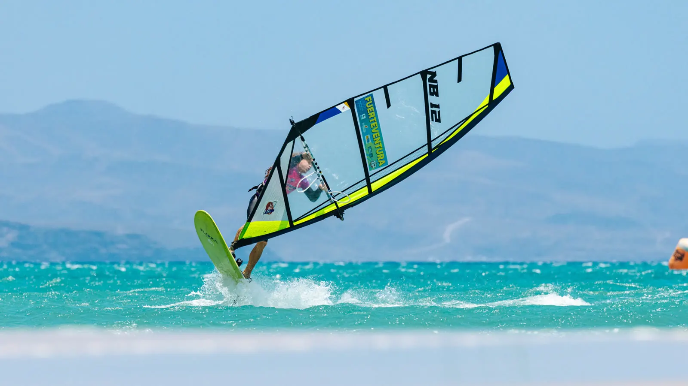
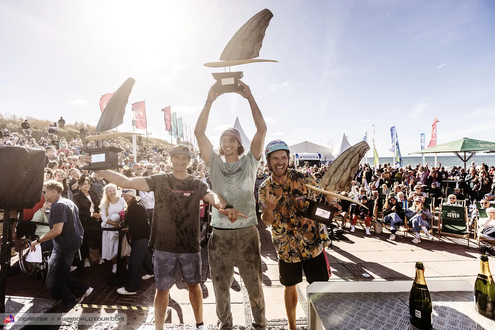
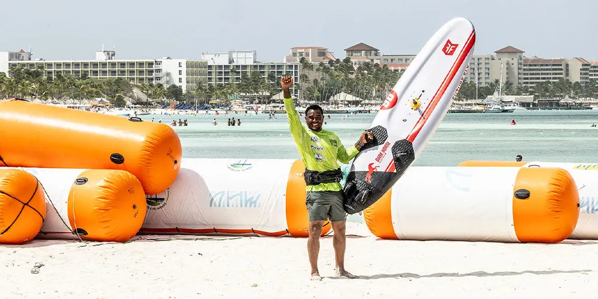
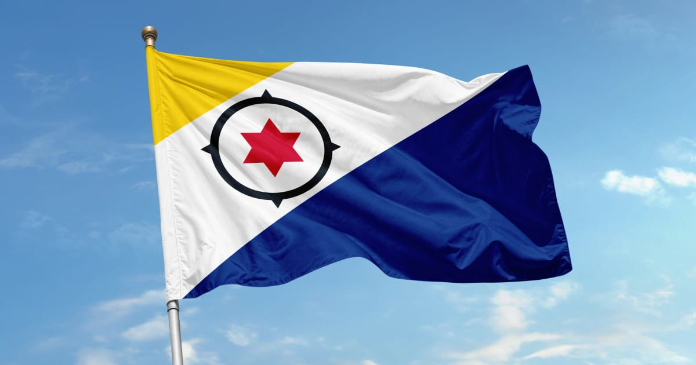

Lac Bay · Bonaire · On tour
News & Events
The riders of the Frans Paradise Hall of Fame call Lac Bay home water. When they win on the world tour, the whole beach at Sorobon wins with them. Follow their season here.

Amado wins in Japan and takes world silver
Bonaire's Amado Vrieswijk won the Yokosuka World Cup, the final stop of the 2026 foil slalom tour. The world title came down to the last day and went to Matteo Iachino, leaving Amado runner-up in the world.
Read the report on PWAOur riders in 2026
Every result below belongs to a rider from the Frans Paradise Hall of Fame. Tap a story for the full report where it was first published.

Amado is European foiling champion
A perfect score at the IFCA Foiling Europeans. Young Tycho Smits finished fifth, third and second in his three races.
Read on PWA
Amado and Taty in the slalom top ten
At the Fuerteventura Grand Slam, Amado missed the podium by 2.6 points in fourth. Taty Frans finished seventh.
Read on PWA
Our young riders lead the Youth World Cup
On day one at Sorobon, Tycho Smits won seven of eight U21 heats and Arxon Gomperts led the U17s. Youp Schmit and Bjorn Saragoza closed the day with a tow-in show at sunset.
Read on Surf Magazin
Our riders open the PWA season
Amado and Taty raced Slalom X at the first stop of the tour, with Youp and Bjorn in freestyle.
Read on Bonaire.nu
Podium for Amado in Sylt
Third in foil slalom at the Sylt World Cup.
Read on PWA
Taty wins the Aruba Hi-Winds long distance
Taty opened his season with gold, winning the men's fin long-distance race at the Aruba Hi-Winds.
Read on Future FlyOur riders on the rankings
Where the Frans Paradise riders stand after the 2026 season. Tap a tile for the full PWA standings.
The year at Lac Bay
Big dates on and around Lac Bay. More 2027 dates follow as the organisers announce them.
PWA Youth Slalom World Cup
Under-20 fin and foil slalom at Sorobon, right in front of the shack. Event page

Bonaire Regatta, 59th edition
A week of racing in Kralendijk bay, with windsurf, kite and wing classes. Regatta info
Bonaire Regatta, 60th edition
The 60th edition is planned for early October 2027. Dates to be announced.
Lessons and rentals
Lac Bay's trade winds blow most of the year. Book a lesson or a board any day, 9:00 to 18:00. See lessons
Results and dates from pwaworldtour.com, surf-magazin.de, bonaire.nu and bonaire.com. Photos belong to their publishers.
Ride their home water
Every rider on this page calls Lac Bay home. Your first lesson is on the same bay, with the same crew.